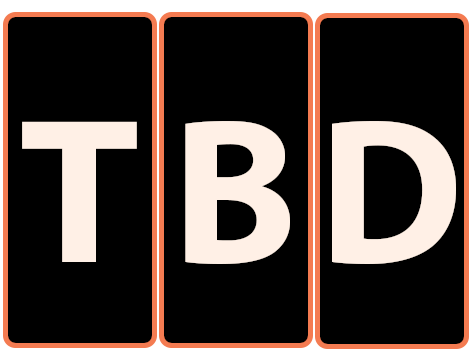
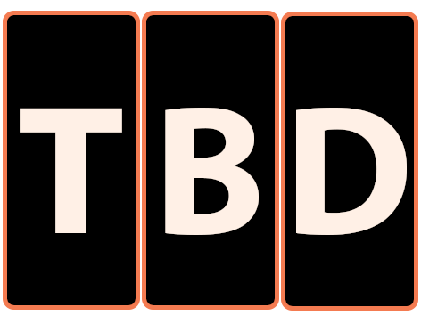

About 
About 
Who is behind TBD
Copyrights and data

A social media post’s (real one, not a parody or satire) main “fact” will be surrounded by additional information – in the post, comments, and other posts or the news/blog article.
The “additional” information’s source credibility and arguments make you believe the post (or not).
But, wait! Most of us process all that information real quick, as we have other posts to keep scrolling.
TBD (To Be Decided) wants you to pause, see if the supporting facts add up to the statement – which at this point, we call it claim.
When we’re so immersed in consuming content, critical thinking often takes a back seat. You’ll be surprised how easy it is to assume X means Y!
Click here to read why!
You'll see a statement (claim).
Check if the additional info (clues) add up to it and evaluate whether the claim is true or false.
Sometimes, the clues would be missing context or half-truths (just as you would find it in rality), but the claims are simple true/false.
The game aims to make you pause and think whether the clue(s) support the claim, as you have a decision to make.
TBD is mainly for the young minds — ages 11 and up.
The game does not contain violent or topical claims.
The claims and clues used have been taken from existing PolitiFact fact checks and articles.
We have tried making it simple, engaging and inclusive, for players from all backgrounds to enjoy.
Kindly write to me if you have any queries, complaints, suggestions or feedback!
Full version
TLDR
Most of us, especially youngsters, constantly keep scrolling or changing tabs when we read/watch something. How often do we comfortably read long articles till the end? Do we even reflect on what we saw someone comment on social media?
It's the age of social media, and we don't know (and can't even count) the extent of misinformation being shared, both unintentionally and intentionally. However, we've heard time and again that social media amplifies misinformation. Why?
Social media runs on user engagement, which means sharing content that "engages others and attracts social recognition." As we scroll through vast amounts of information on digital media platforms, we tend to skim content without having enough time to verify its accuracy and authenticity.